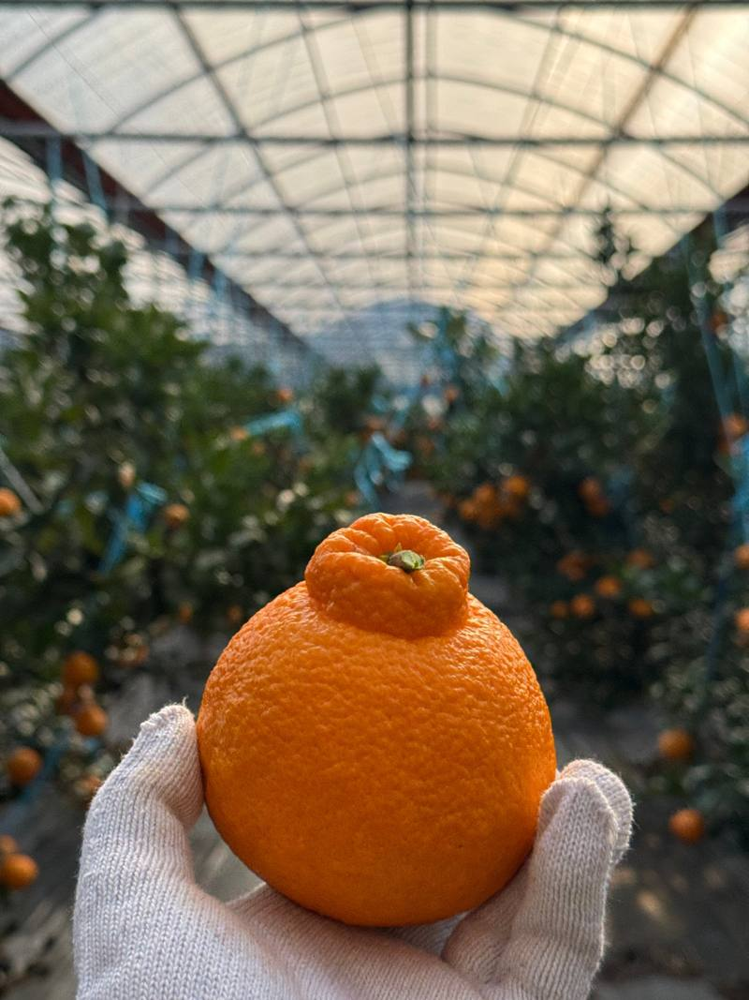
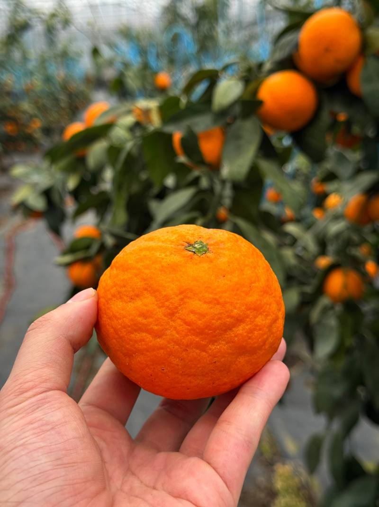
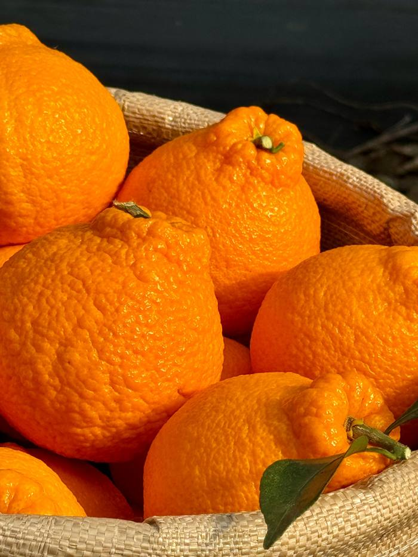
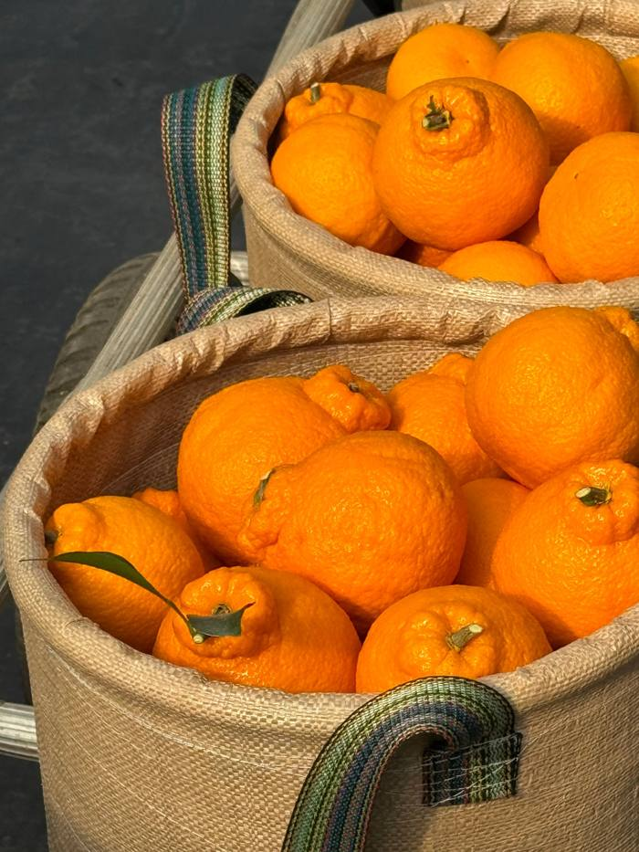
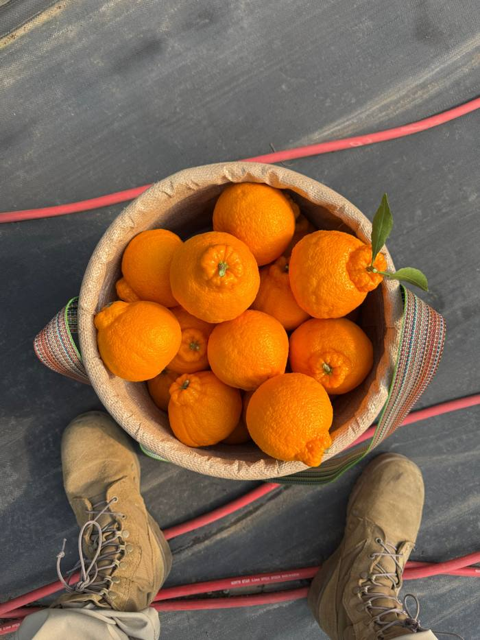
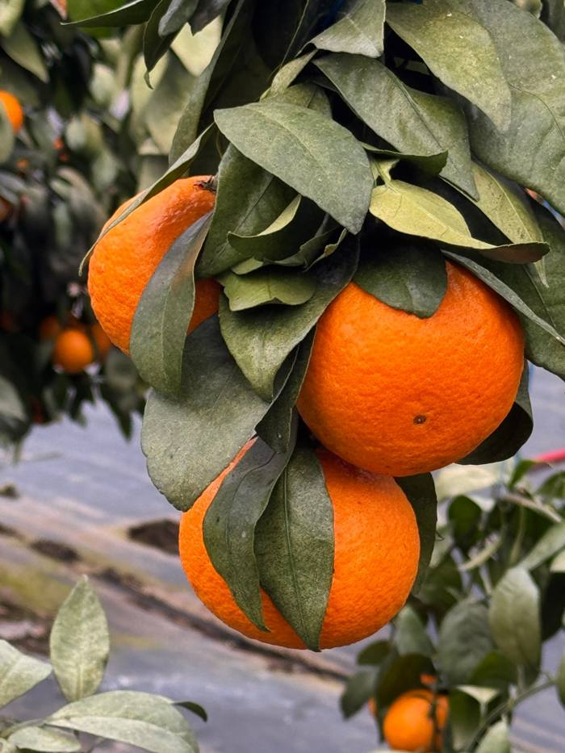
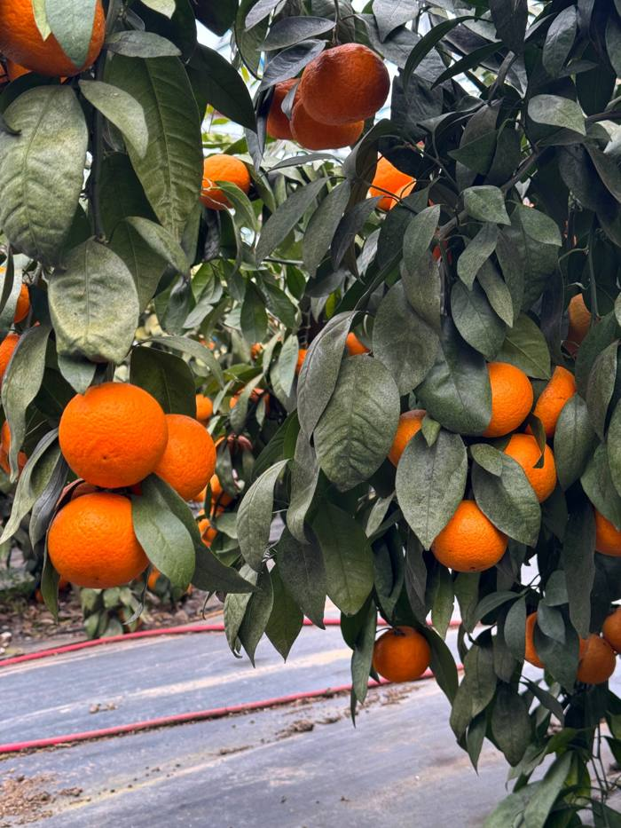
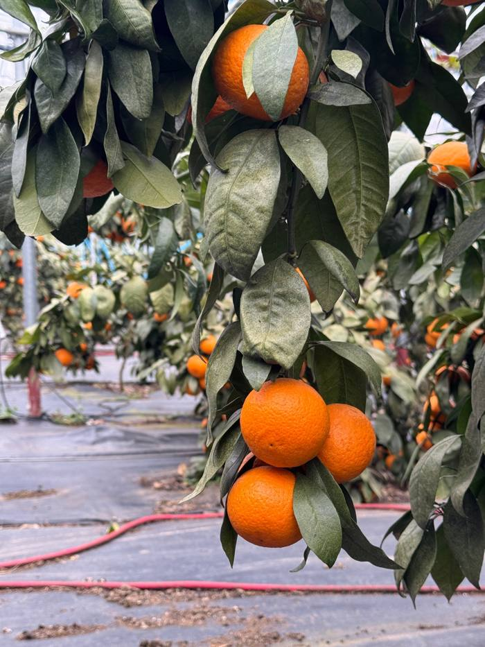

농장 이야기
제주 서귀포 하원동, 한라산 자락 해발 240m의 완만한 언덕에 있습니다.
풍부한 지하수 위에 있으면서도 물 빠짐이 좋은 지형이고, 기후가 비교적 서늘합니다. 그래서 한라봉이 물러지지 않고 단단하게 자랍니다.
식물생리학의 원리를 바탕으로, 한라봉이 가진 당과 산의 균형을 가장 중요하게 생각하며 청정한 환경에서 재배합니다.
맛의 결이 다릅니다.

새콤달콤한 맛과 껍질을 벗길 때 퍼지는 향이 매력입니다. 후숙하면 신맛이 부드러워지고 단맛이 깊어집니다.

달고 부드러운 맛의 귤입니다.
제주 서귀포 하원동, 한라산 자락 해발 240m의 완만한 언덕에 있습니다.
풍부한 지하수 위에 있으면서도 물 빠짐이 좋은 지형이고, 기후가 비교적 서늘합니다. 그래서 한라봉이 물러지지 않고 단단하게 자랍니다.
식물생리학의 원리를 바탕으로, 한라봉이 가진 당과 산의 균형을 가장 중요하게 생각하며 청정한 환경에서 재배합니다.
하원동 하우스에서 직접 찍은 사진입니다.






잘 익은 때에 거두고, 가장 맛있는 때에 드시도록 보냅니다.
받으신 뒤 보관과 손질에 대한 안내입니다.
후숙 중에 껍질의 수분이 증발하면서 주름이 약간 생길 수 있습니다. 자연스러운 현상입니다.
일주일 이내는 햇볕이 들지 않는 서늘한 곳에 두세요. 일주일 이상은 냉장 보관을 권장합니다. 박스에 보관할 때는 비닐을 벗기지 않고 덮어 두면 수분이 빠져나가는 것을 막는 데 도움이 됩니다.
드시기 전에 흐르는 물에 씻은 뒤 물기를 닦아 주세요.
물과 계피를 넣고 냄비에 끓이면 환기와 탈취에 도움이 됩니다. 현관이나 신발장에 2~3일 두면 은은한 향을 느끼실 수 있습니다.
하원그로브는 제주 감귤농장 팜지오(farmgio)가 운영하는 브랜드입니다.